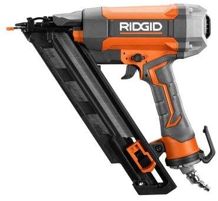

15 Guage 2-1/2'' Finish Nailer
RIDGID introduces the 15-Gauge 2-1/2 in. Angled Finish Nailer, delivering very consistent and professional results with every trigger-pull. Packed with Clean Drive Technology, this nailer delivers over 17X more consecutive perfect drives versus the competition. This results in less time fixing, and more time working. As part of the new lineup of RIDGID Pneumatic tools, this is sure to be a staple in contractors toolboxes.
Product Specifacations

- Product Height (in.): 12.38
- Product Width (in.): 3.50
- Max. Fastener Size: 2-½ in.
- Min. Fastener Size: 1-¼ in.
- Nail Guage: 15
- Nailgun Angle: 35 deg.